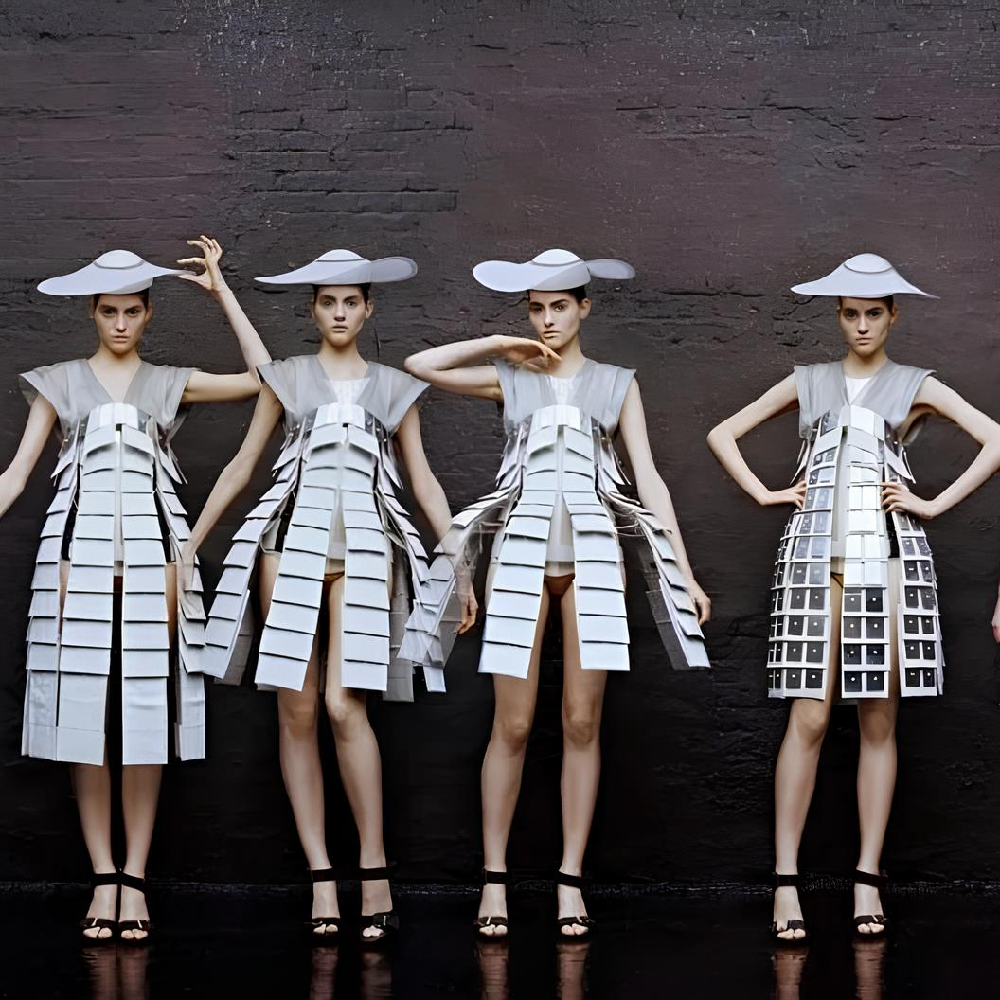

Quando a Moda Encontra a Tecnologia

A moda contemporânea ultrapassou os limites dos tecidos tradicionais e da costura manual. Hoje, a engenharia mecatrônica e os sistemas microcontrolados atuam diretamente na estrutura das roupas. O pioneirismo dessa união ocorreu no desfile "One Hundred and Eleven" (2007) do estilista Hussein Chalayan, que apresentou vestidos mecânicos que mudavam de silhueta sozinhos, utilizando microchips e servomotores embutidos para retrair fios de aço e transformar as peças de forma totalmente automatizada no palco.
Avançando nessa fusão, a designer holandesa Anouk Wipprecht desenvolveu o conceito de "Inteligência de Passarela" com o seu famoso Spider Dress 2.0. Utilizando impressão 3D baseada em mecatrônica e alimentada por módulos inteligentes de computação vestível, o vestido possui garras robóticas conectadas a sensores de proximidade e respiração. Quando o sistema detecta uma aproximação rápida ou invasiva no espaço pessoal da modelo, as garras reagem assumindo posições de ataque.
Leia mais →